A.1 Anomaly Detection and Fault Diagnosis of a Turbine Generator Lubrication System
A turbine generator lubrication system (TGLS) supplies oil to the journal bearings to form a lubricating film between the rotating shaft and the bearings and to remove heat generated during operation. Effective lubrication and cooling require the oil pressure, flow rate, temperature, and cleanliness to remain within appropriate ranges. The pump provides the required pressure and flow, while the filter removes contaminants and the cooler regulates oil temperature. Faults in these components can alter the oil supply and impair bearing lubrication and cooling. Diagnosing their condition is therefore important for reliable turbine generator operation.
Oil flows from the tank through the pump, filter, and cooler to the bearings and returns to the tank after lubrication and cooling. Sensors along this circulation path measure pressure, flow, and temperature upstream and downstream of the components, allowing changes associated with component faults to be observed. Monitoring the bearing supply pressure, metal temperature, and vibration also reveals how problems in the lubrication components affect the bearing response.
Implementing PHM based on these relationships requires sensor data under both normal and faulty conditions. However, deliberately introducing faults into an operating power plant is difficult. The test rig in Figure A.1 was therefore used to simulate four component fault modes at different severity levels and collect signals for their combinations. This case study begins with anomaly detection and then extends the analysis to binary component diagnosis and fault severity diagnosis.
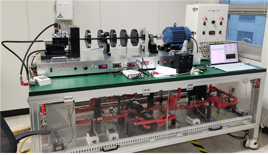
The analysis follows the approach used in the textbook’s ZeMA hydraulic system example: learning how component faults affect sensor signals to diagnose their presence and severity. It also relates to the wafer transfer robot example, which distinguishes component faults from the system performance affected by those faults. Here, bearing responses serve as observations related to system performance. Because the available labels describe faults in the lubrication components, changes in bearing response must be distinguished from faults originating in the bearing itself.
A.1.1 TGLS Dataset
Test Rig and Fault Modes
The four fault modes introduced into the rig are pump fault, filter blockage, cooler blockage, and cooler cooling fault, as shown in Figure A.2. Pump faults are implemented by switching operation between separately installed normal and faulty pumps. Filter and cooler blockages are simulated by restricting the oil path with valves, whereas the cooler cooling fault is simulated by blocking airflow from the cooling fan. A restriction in the cooler’s oil passage and a loss of cooling performance are therefore treated as separate fault modes.
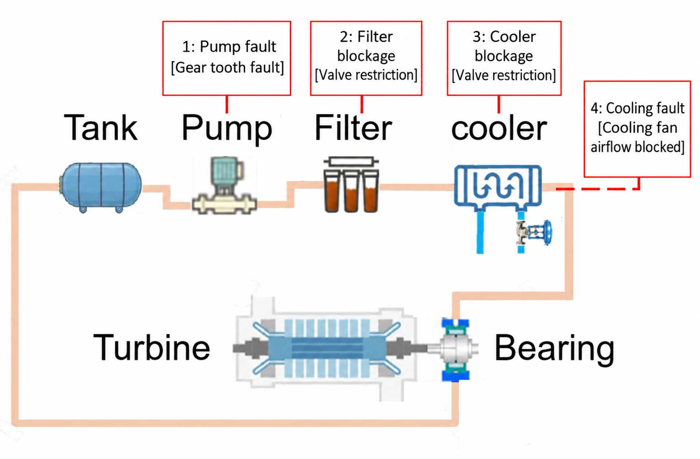
Figure A.3 shows the sensor locations. The sensors are divided into two groups according to their purpose. Twelve pressure, temperature, and flow sensors around the components are used to characterize component behavior and upstream–downstream relationships. Bearing supply pressure Pb, metal temperature Tb, and vibration channel Vib (not shown in the schematic) monitor the bearing response affected by component faults. This distinction allows component diagnosis and deviations in bearing response from the normal reference to be assessed separately.
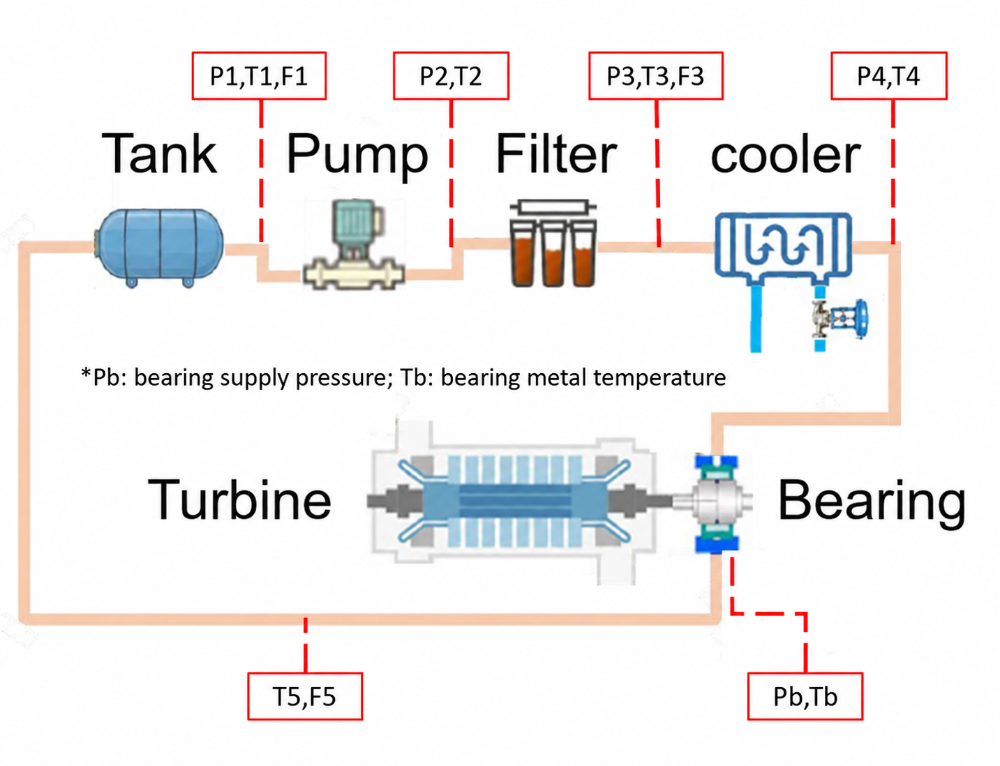
Data Files and Labels
The measured signals and fault labels are stored in data.mat and code.mat, respectively. The data variable has dimensions 17,400 × 15 × 81: 17,400 time samples from the 15 sensors listed in Table A.1 for each of 81 test conditions. The corresponding code variable is an 81 × 4 array whose rows specify the levels of the four fault modes for each condition. Condition and sensor numbers in this case study start at 1, consistent with MATLAB and the dataset documentation. Subtract 1 when using these numbers as Python array indices.
The columns of code correspond to the pump, filter blockage, cooler blockage, and cooler cooling fault, in that order. The levels are defined as 0 = normal, 1 = moderate fault, and 2 = severe fault. The original file used the reverse order; the labels were converted so that larger values indicate greater severity. Under this convention, condition 28, [0, 0, 0, 0], is all-normal, and condition 27, [2, 2, 2, 2], is all-severe. Three levels for each of four fault modes yield 3⁴ = 81 combinations, with only one all-normal test record.
Table A.1 Sensor order in data
| No. | Channel | Measurement |
|---|---|---|
| 1 | P1 | Pump inlet pressure |
| 2 | P2 | Pump outlet pressure |
| 3 | P3 | Filter outlet / cooler inlet pressure |
| 4 | P4 | Cooler outlet pressure |
| 5 | Pb | Bearing supply pressure |
| 6 | T1 | Pump inlet temperature |
| 7 | T2 | Pump outlet temperature |
| 8 | T3 | Cooler inlet temperature |
| 9 | T4 | Cooler outlet temperature |
| 10 | T5 | Return-line temperature |
| 11 | F1 | Pump inlet flow |
| 12 | Tb | Bearing metal temperature |
| 13 | F3 | Filter outlet / cooler inlet flow |
| 14 | F5 | Return-line flow |
| 15 | Vib | Bearing vibration channel |
Among the sensors in Table A.1, P1–P4, T1–T5, and F1, F3, and F5 form the component group; Pb, Tb, and Vib form the bearing-response group. Each record contains 17,400 samples. If the test duration is approximately 29 minutes, this corresponds to a sampling frequency of 10 Hz.
Comparison of Normal and Fault Signals
To examine the overall data characteristics, all-normal condition 28 is compared with all-severe condition 27. Figure A.4 groups the component signals into pressure, temperature, and flow, with normal conditions on the left and faulty conditions on the right. Under faults, P2–P4 and the flow signals generally decrease and exhibit substantially greater fluctuations. T4 and T5 show an upward temperature trend. Some temperatures continue changing until the end of the record, suggesting a transient response before steady state. The record alone cannot establish the eventual equilibrium temperature, and the simultaneous introduction of multiple faults prevents attributing all observed changes to a single component.
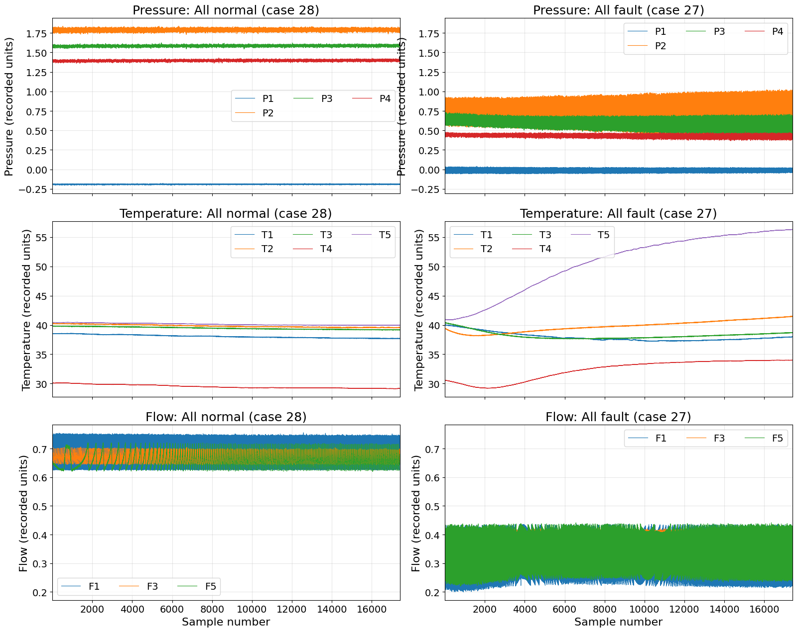
Figure A.5 compares bearing responses under the same two conditions. Under faults, Pb falls from the normal level of approximately 1.2 to near zero, while Tb increases gradually over time, indicating a transient thermal response. These changes reflect the altered lubrication and thermal conditions experienced by the bearing under component faults. Vibration changes are less evident than pressure and temperature changes; interpretation requires confirming the signal definition and sampling information and calculating relevant features. The observations concern bearing responses to component faults, rather than evidence of a fault in the bearing itself.
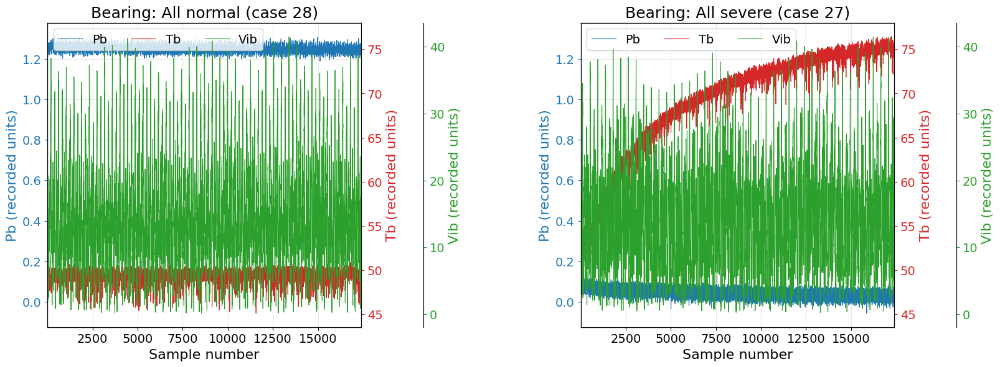
Time Windows and Model Inputs
To examine changes during operation, each record of 17,400 samples is divided into 58 non-overlapping windows of 300 samples. The first window covers samples 1–300, the second 301–600, and the last 17,101–17,400. At an assumed sampling frequency of 10 Hz, each window represents 30 seconds. This length is a practical setting for the exercise, rather than an established optimum for the underlying phenomena. Short windows provide finer temporal resolution but can increase variability in estimated statistics; long windows stabilize statistics but may average out short changes. Window length should be selected with this trade-off in mind.
Applying the same division to every sensor produces an array of 58 windows × 300 time samples × 15 sensors for each test record. The 58 windows represent 58 observation intervals within a single record.
The windows are converted into different input representations according to the analysis method. Mahalanobis-distance anomaly detection, discussed next, uses the mean and standard deviation of each sensor in each window. The 12-sensor component group therefore yields a 24-dimensional feature vector, while the three-sensor bearing-response group yields six dimensions. The autoencoder instead takes signal arrays of size 300 × 12 or 300 × 3 without extracting statistical features. Binary and severity diagnosis subsequently extend the component statistics with difference-signal and physically motivated features to form 24-, 32-, and 44-dimensional vectors. Window-level results are then aggregated when a decision for the complete test condition is required.
A.1.2 Anomaly Detection
Anomaly detection evaluates how far signals under other test conditions depart from the normal reference. Pressure, temperature, and flow changes are represented by anomaly scores for the component group, while supply pressure, metal temperature, and vibration changes are scored for the bearing-response group. Because component changes can affect the bearing in different ways, the scores and threshold-exceedance times need not coincide between the groups.
Only the all-normal record from condition 28 is available to establish the reference. All 58 windows from this record are therefore used for reference estimation and model training. These windows originate from the same run and do not capture the variability across different normal operating runs. The anomaly detection results should consequently be interpreted as evaluations against a reference built from limited normal data. Under this constraint, separate normal references are established using Mahalanobis distance and an autoencoder, and the remaining 80 component-fault conditions are evaluated for deviations from those references.
Mahalanobis-Distance Anomaly Detection
Mahalanobis distance (MD), introduced in Section 4.3 of the textbook, measures deviation from the normal mean while accounting for covariance among features. Here, window-level means and standard deviations form the observation vectors. The number of normal vectors is n = 58, and their dimension p is 12 × 2 = 24 for the component group and 3 × 2 = 6 for the bearing-response group. The component reference mean and covariance are therefore estimated from a 58 × 24 feature matrix. The 300 signal samples within each window are used to calculate features, and the resulting 58 feature vectors are used to estimate the normal reference.
The mean and standard-deviation features differ in units and magnitude and are standardized using the 58 windows. For example, a sensor’s mean feature is centered by the mean of its 58 window means and divided by their standard deviation. The same procedure is applied independently to its 58 window standard deviations. The code performs this z-transformation with StandardScaler, allowing features such as mean pressure and temperature standard deviation to be handled in standardized coordinates.
Let z denote the transformed observation vector and μ the normal mean. The Mahalanobis distance D(z) is given by Equation (A.1). The standardization parameters, mean, and covariance estimated from normal data remain fixed when evaluating other conditions.
(A.1)
(A.2)
Covariance is estimated using the shrinkage formulation in Equation (A.2). With strongly correlated features or limited observations, the inverse of the empirical covariance matrix S can be unstable, causing MD to become excessively large even for small variations. To alleviate this problem, S is combined with τI, a matrix whose diagonal entries all equal τ. Here, I is the identity matrix and τ is the mean of the diagonal entries of S.
Shrinkage covariance is estimated by the Ledoit–Wolf method, implemented as LedoitWolf in the code. The coefficient λ specifies the mixture of S and τI: λ = 0 retains S, and a larger λ gives greater weight to τI. The values estimated from the normal data were 0.077 for the component group and 0.321 for the bearing-response group. For example, λ = 0.077 assigns 92.3% weight to S and 7.7% to τI.
The anomaly threshold is set to the empirical 95th percentile of the 58 normal distances without assuming a particular probability distribution. Windows from the same record may be correlated, and shrinkage is used to estimate covariance. Conventional F- or chi-squared-distribution thresholds based on independent normal observations and the usual sample covariance therefore cannot be applied directly.
For a new condition, the 24 or six features from each window are standardized using the normal reference, and one distance is calculated with Equation (A.1). Repeating this for 58 windows yields 58 distances. The left-hand plots in Figure A.6 show these distances for the normal record together with the thresholds, with the component group above and the bearing-response group below. Some normal scores exceed the threshold because the threshold is the 95th percentile of these same scores; they should not be interpreted as false alarms measured on independent normal tests.
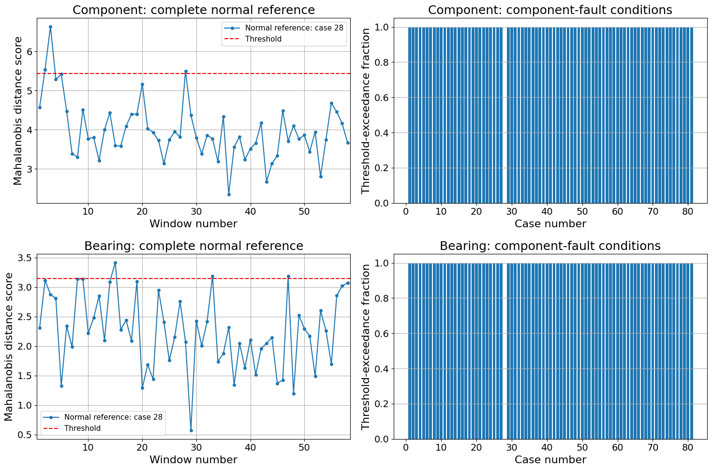
Table A.2 Mahalanobis-distance results
| Sensor group | Features | Shrinkage | Distance threshold | Fault-condition windows above threshold |
|---|---|---|---|---|
| Component | 24 | 0.077 | 5.429 | 4,640 / 4,640 |
| Bearing response | 6 | 0.321 | 3.148 | 4,640 / 4,640 |
The right-hand plots in Figure A.6 summarize the fault-condition results as threshold-exceedance fractions. Each fraction is the number of windows above threshold divided by 58; a value of 1 means that every window exceeds the reference threshold. Normal condition 28 is excluded, leaving a gap at its position. As Table A.2 shows, all 4,640 windows from the 80 fault conditions exceed threshold in both groups. Thus, in this dataset, component faults produce distinguishable deviations in both component signals and bearing responses.
Autoencoder Anomaly Detection
Unlike MD, which summarizes signals through statistical features, an autoencoder learns to reconstruct normal signals and uses reconstruction error to assess anomalies. This case study uses the same form of one-dimensional convolutional autoencoder as the ZeMA example in Section 4.5.2. The component and bearing-response models are trained on signal arrays of size 300 × 12 and 300 × 3, respectively. Each sensor is standardized using its mean and standard deviation across all 17,400 samples of the normal record. These parameters remain fixed for other conditions, preserving fault-induced changes in signal level.
Table A.3 Convolutional autoencoder architecture
| Stage | Layer | Output size (time × channels) |
|---|---|---|
| 1 | Conv1D: 8 filters, kernel 7, stride 2, ReLU | 150 × 8 |
| 2 | Dropout: rate 0.2 | 150 × 8 |
| 3 | Conv1D: 16 filters, kernel 7, stride 2, ReLU | 75 × 16 |
| 4 | Conv1DTranspose: 8 filters, kernel 8, stride 2, ReLU | 150 × 8 |
| 5 | Dropout: rate 0.2 | 150 × 8 |
| 6 | Conv1DTranspose: C filters, kernel 8, stride 2, linear output | 300 × C |
In the encoder in Table A.3, convolution reduces the temporal length from 300 to 150 and then 75 while representing signal patterns. The decoder uses transposed convolution to restore the length to 300 and output reconstructed signals for C sensors. The weights are trained to match the output to the input, allowing normal signal relationships and patterns to be reproduced. Dropout removes activations with probability 0.2 during training and is disabled when the trained model reconstructs signals.
Weights are trained with Adam to minimize mean squared error (MSE) between input and output. The learning rate is 0.001, the batch size 32, and the maximum training duration 120 epochs. Because no separate validation data are available, training stops if the training loss does not improve for 15 epochs, and reconstruction uses the weights with the smallest training loss. As Figure A.7 shows, both losses generally decrease through 120 epochs. The minimum losses occur at epochs 118 and 119 for the component and bearing-response models, respectively.
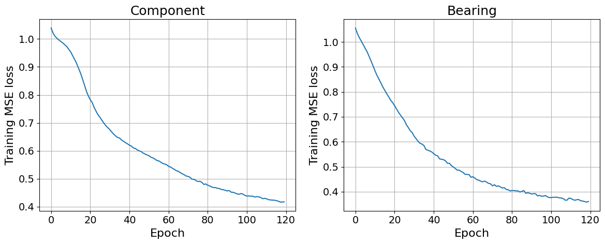
Table A.4 Autoencoder training results and RMSE thresholds
| Group | Best epoch | Best training loss | RMSE threshold |
|---|---|---|---|
| Component | 118 | 0.417 | 0.604 |
| Bearing response | 119 | 0.359 | 0.554 |
After training, each test condition is reconstructed and the RMSE in Equation (A.3) is used as the anomaly score. Squared errors are averaged over all 300 time points and C sensors within a window, and the square root is taken to obtain one score per window. A record is therefore represented by 58 reconstruction errors for the sensor group as a whole, rather than scores for a particular sensor.
(A.3)
In the equation, w denotes the window, t the time point within a window, c the sensor, and e the difference between the standardized input and reconstruction. The sensor count C is 12 for the component model and three for the bearing-response model. Errors are combined in standardized coordinates so that quantities with different physical units are not added directly. Thresholds are again the empirical 95th percentiles of the 58 normal RMSE values, giving 0.604 and 0.554 for the component and bearing-response models.
The training losses and RMSE thresholds in Table A.4 are calculated differently. Training loss aggregates batch-level MSE while Dropout is active and weights are being updated, whereas anomaly scores are window-level RMSE values recalculated with the final selected weights and Dropout disabled.
Figure A.8 shows normal-window RMSE values and threshold-exceedance fractions for fault conditions. All 4,640 fault-condition windows exceed threshold in the component model. In the bearing-response model, all but one window of condition 1 exceed threshold: its fraction is 57/58, while the remaining conditions have fractions of 1. Bearing responses therefore also depart from the normal reference in most windows under component faults.
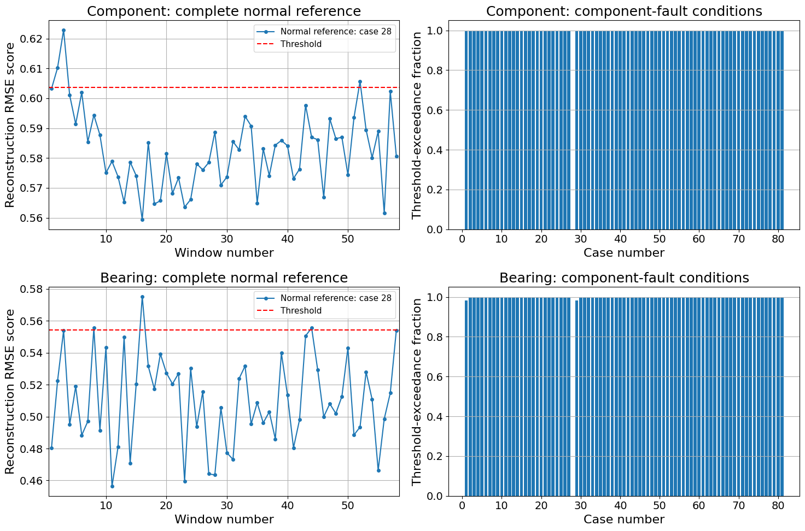
The trained autoencoder can also reconstruct the original signals. Figure A.9 illustrates this for component sensor T4 and bearing sensor Tb under normal condition 28 and all-severe condition 27. Windows are reconstructed individually and concatenated in temporal order, so the horizontal axis spans all 17,400 samples. Original and reconstructed signals agree relatively well under the normal condition but differ substantially under faults.
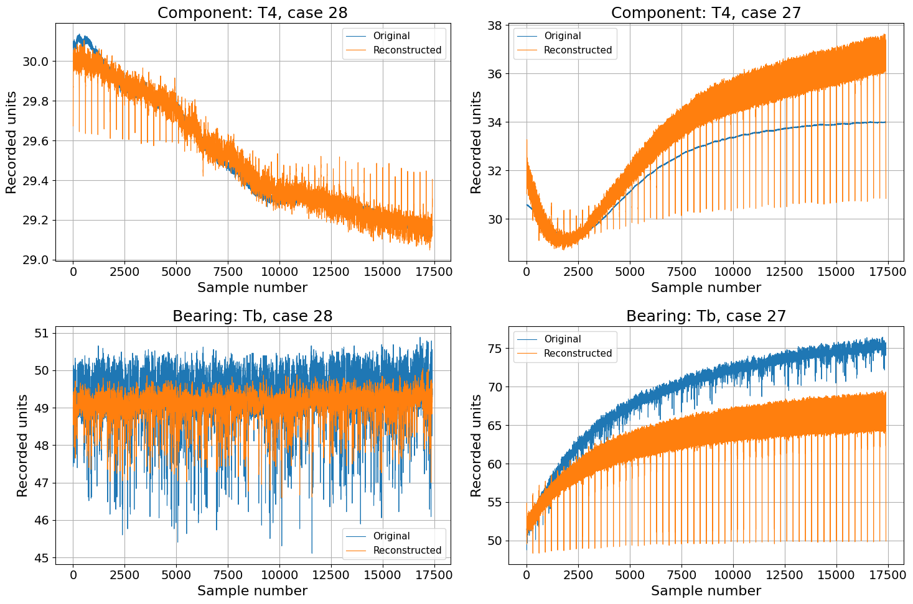
Figure A.10 examines condition 1 = [0, 0, 0, 1], in which only a moderate cooler cooling fault is introduced. The left-hand plots connect 58 window-level RMSE scores for each sensor group in temporal order. Compared with the normal condition in the left-hand plots of Figure A.8, almost all windows exceed threshold. Scores also increase over time in both groups, consistent with transient responses such as rising temperature caused by reduced cooling performance.
Group-level scores alone do not identify which sensors differ most, so reconstruction errors for the same condition are also aggregated by sensor. The bars on the right of Figure A.10 are calculated using Equation (A.4), combining all 17,400 errors for each sensor across 58 windows of 300 samples. They indicate how well that sensor is reconstructed over the complete run.
(A.4)
Under this condition, large reconstruction errors occur in T4 and T5 in the component group and Tb in the bearing-response group. These results can be interpreted as increased reconstruction error when reduced cooling performance causes temperature responses to depart from those learned from normal signals.
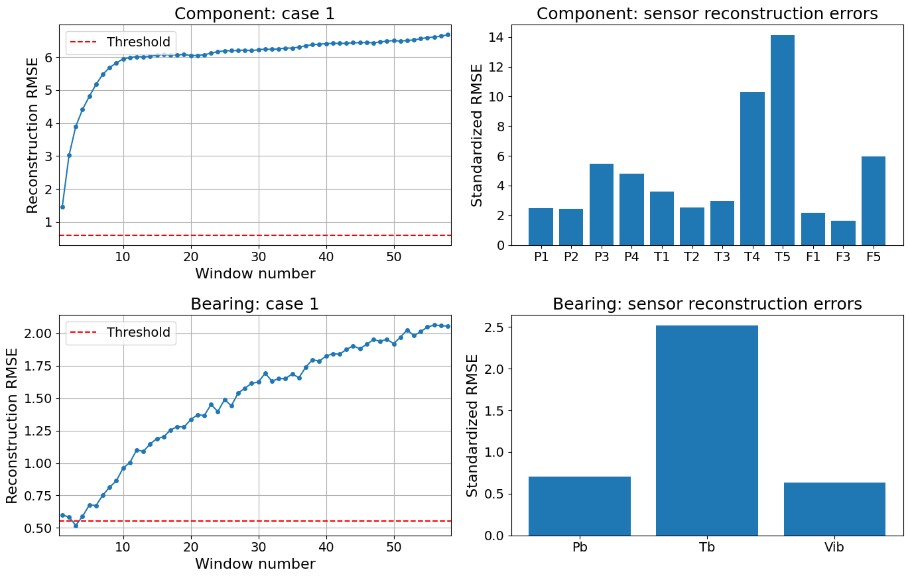
A.1.3 Binary Component Diagnosis
Having detected departures from the normal reference, the next step is to distinguish which components are faulty. Supervised binary diagnosis is performed using component sensor data and labels from the 81 test conditions. As in the ZeMA example in Section 5.3.5, the artificial neural network (ANN) has 10 hidden nodes and four sigmoid output nodes. The input features are adapted to TGLS while retaining the basic architecture that jointly outputs fault probabilities for four fault modes.
For binary diagnosis, normal label 0 is retained, while moderate label 1 and severe label 2 are merged into fault label 1. Because multiple components can be faulty simultaneously, the model predicts normal or faulty status for each component rather than selecting one of four mutually exclusive classes. This multilabel classification uses features from the 12 component sensors; bearing-response sensors Pb, Tb, and Vib are excluded.
Three Feature Configurations
Three feature configurations are constructed to examine their effect on diagnostic performance. The first contains 24 statistical features from the original sensors. Adding upstream–downstream difference signals increases the dimension to 32, and adding physically motivated indicators involving flow increases it to 44. The same configurations are used for severity diagnosis, allowing their effects to be compared across diagnostic tasks.
The baseline comprises the window mean and standard deviation of each of 12 sensors, giving 24 features. The four difference signals in Table A.5 add eight mean and standard-deviation features to form the 32-dimensional configuration. Pump pressure rise, filter and cooler pressure drops, and the temperature decrease across the cooler explicitly provide upstream–downstream relationships in addition to individual sensor values.
Table A.5 Upstream–downstream difference signals
| Difference signal | Expression | Meaning |
|---|---|---|
| Pump pressure rise | P2 − P1 | Pressure rise across the pump |
| Filter pressure drop | P2 − P3 | Pressure loss across the filter |
| Cooler pressure drop | P3 − P4 | Pressure loss across the cooler |
| Cooler temperature drop | T3 − T4 | Temperature decrease across the cooler |
Difference signals describe changes across components, but their magnitudes depend on operating flow as well as faults. For example, pressure loss can change with flow even at the same blockage level. Table A.6 therefore introduces pressure drop divided by flow or squared flow as indicators related to resistance. Flow multiplied by pressure rise is related to hydraulic power, while flow multiplied by temperature difference is related to heat transport. The means and standard deviations of these six indicators add 12 features, producing the 44-dimensional configuration. These are physically motivated proxies rather than rigorously calculated power, heat-transfer rates, or dimensionless quantities accounting for unit conversion and fluid properties.
Table A.6 Additional physically motivated indicators
| Indicator | Expression | Flow used |
|---|---|---|
| Pump power proxy | F1(P2 − P1) | F1 |
| Filter linear-resistance proxy | (P2 − P3)/Q | Q=max(F3, ε) |
| Filter squared-flow resistance proxy | (P2 − P3)/Q² | Q=max(F3, ε) |
| Cooler linear-resistance proxy | (P3 − P4)/Q | Q=max(F3, ε) |
| Cooler squared-flow resistance proxy | (P3 − P4)/Q² | Q=max(F3, ε) |
| Cooling heat-transport proxy | F3(T3 − T4) | F3 |
The resulting feature arrays for one condition have dimensions 58 × 24, 58 × 32, and 58 × 44. In the notebook, FEATURE_MODE selects the dimension. After the feature-preparation cell is executed, binary and severity diagnosis are run sequentially with the same configuration. To compare another dimension, change FEATURE_MODE and repeat feature preparation and model training and evaluation in the same order. Results for configurations executed within the same runtime session accumulate in a comparison table.
Additional features are calculated by forming difference, product, and ratio signals at each time point before computing window-level means and standard deviations. For example, the filter indicator mean averages (P2−P3)/Q over 300 samples and generally differs from mean pressure drop divided by mean flow. Similarly, the standard deviation of a difference signal is not the difference between the two sensors’ standard deviations. Pressure and temperature differences themselves appear only once in the 32-feature configuration; the 44-feature configuration adds products and ratios involving flow. These are not duplicate columns, although correlations with existing features may remain.
For ratio indicators, a denominator floor prevents excessively large values at very low flow. The code uses Q = max(F3, ε), where ε is the larger of 1% of the median positive F3 value in the training set and 10⁻⁸. In the stored run, ε was approximately 0.005 and the fraction below the floor was displayed as 0.000 to three decimal places. The floor is applied only to the four resistance-indicator denominators; the power- and heat-transport-related products use the original F1 and F3 values.
Condition-Level Splitting and ANN Training
Training, validation, and test sets are split by complete test condition. Of the 81 conditions, 30% are reserved for testing, and 20% of the remainder for validation, yielding 44 training, 12 validation, and 25 test conditions. Expanding their windows gives 2,552, 696, and 1,450 inputs, respectively. A random seed of 42 and the same condition split are used for all three feature configurations.
In the ZeMA example, stratification preserves similar proportions of normal–fault label combinations across the three sets. TGLS also aims to balance condition composition, but its single all-normal condition cannot form a separate stratum for splitting. Conditions with zero or one faulty component are therefore combined into one splitting stratum; the others are grouped by two, three, or four faulty components. The proportions of these groups are preserved while the actual diagnosis labels remain unchanged. The final split contains 44 training, 12 validation, and 25 test conditions.
After splitting, features are standardized using training-set means and standard deviations, and the same transformation is applied to validation and test data. The architecture is d → 10 ReLU → 4 sigmoid, where d is 24, 32, or 44. Each output represents a component fault probability; their sum is not constrained to one because faults can coexist. Training uses binary cross-entropy and Adam with a learning rate of 0.01, a batch size of 32, and a maximum of 1,000 epochs. Training stops after 30 epochs without improvement in validation loss, and the weights with the lowest validation loss are used for the final model.
Figure A.11 shows training of the 44-feature model, the configuration with the most features. The model has 494 parameters and is trained for 37 epochs before restoring the weights from epoch 7, which gives the lowest validation loss. The training and validation losses at that epoch are 0.016 and 0.090, respectively.
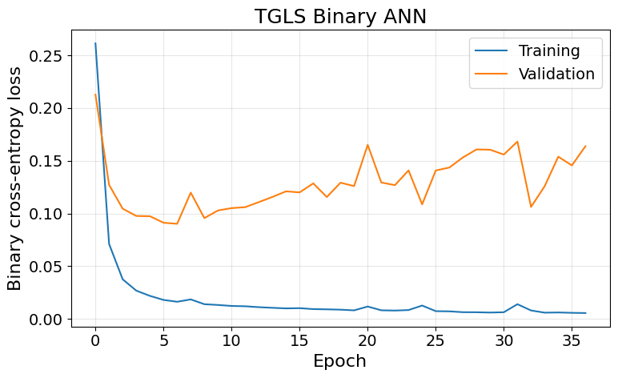
Window-Level and Condition-Level Decisions
The trained model outputs a fault probability for each component in each window; a value of at least 0.5 is classified as faulty. For a complete run, the 58 probabilities for component j are averaged as in Equation (A.5), and the same threshold of 0.5 is applied. This preserves probability magnitudes while summarizing the overall response of a condition. It differs both from declaring a fault whenever any window is faulty and from a simple majority vote over binary window decisions.
(A.5)
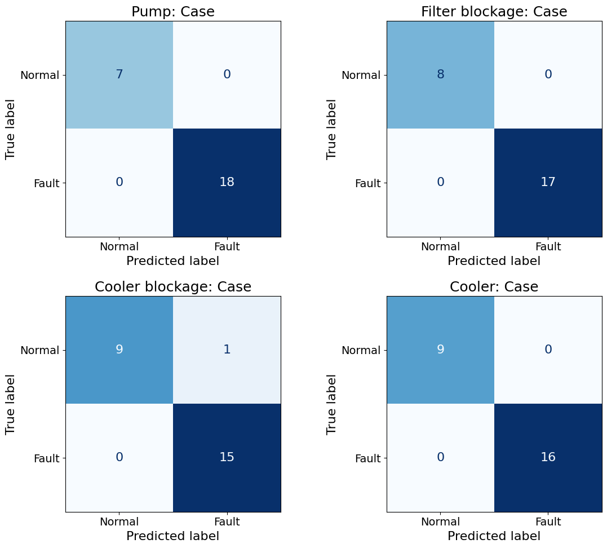
Table A.7 Binary diagnosis accuracy for 25 test conditions
| Features | Pump | Filter blockage | Cooler blockage | Cooling fault | Mean |
|---|---|---|---|---|---|
| 24 | 100% | 76% | 88% | 96% | 90% |
| 32 | 100% | 92% | 92% | 100% | 96% |
| 44 | 100% | 100% | 96% | 100% | 99% |
Results for the 25 test conditions are presented in Figure A.12 and Table A.7. With 44 features, accuracies are 100% for the pump, 100% for filter blockage, 96% for cooler blockage, and 100% for the cooler cooling fault, averaging 99%. This is also equivalent to 99 correct decisions out of 100 component decisions across the 25 conditions. The only error is a false fault indication for one condition with no cooler blockage. All four component decisions are correct in 24 of the 25 conditions, giving an exact condition-level accuracy of 96%.
Mean component accuracy increases from 90% with 24 features to 96% with 32 and 99% with 44, with a particularly large improvement for filter blockage. Under this split, adding upstream–downstream differences and flow relationships improves diagnosis. However, these are exploratory comparisons on the same test set. The advantage of 44 features should be checked on new operating conditions and repeated tests rather than assumed to hold universally.
A.1.4 Multiclass Fault Severity Diagnosis
After binary fault diagnosis, each fault mode is classified into normal, moderate, or severe levels. The same windows, 24-, 32-, and 44-feature configurations, and condition split are used to compare feature effects consistently. The ZeMA example in Section 5.3.7 uses a raw-signal CNN for severity diagnosis; here, an ANN takes the extracted features and jointly predicts the severity of the four fault modes.
Model Architecture and Training
To represent severity, the binary ANN’s four sigmoid outputs are replaced by a three-node softmax output for each component. The d inputs and 10 ReLU hidden nodes are shared, while each component outputs separate probabilities of normal, moderate, and severe states that sum to one. The complete output consists of four three-class distributions, or 12 probabilities. Feature configurations and training, validation, and test splits are kept identical to binary diagnosis.
The training loss is the sum of multiclass cross-entropies for the four components, implemented as sparse categorical cross-entropy with integer labels. Adam uses a learning rate of 0.01, a batch size of 32, and a maximum of 1,000 epochs. As in binary diagnosis, training stops after 30 epochs without validation-loss improvement and restores the best weights.
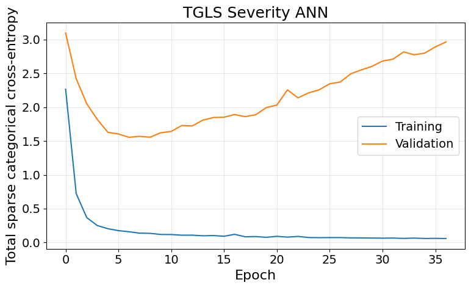
The 44-feature model in Figure A.13 has 582 parameters and is trained for 37 epochs. Weights from epoch 7 are restored because they give the lowest validation loss; training and validation losses at that point are 0.159 and 1.556. Thereafter, training loss falls while validation loss rises, showing that better fit to the training data does not necessarily improve performance on other conditions.
Severity Decisions and Feature Comparison
Figure A.14 presents severity diagnosis for the same 25 test conditions used in binary diagnosis. For each component, normal, moderate-fault, and severe-fault probabilities are averaged separately over the 58 windows. The level corresponding to the largest of these three averages is selected. For example, if the averages are 0.10 for normal, 0.65 for moderate, and 0.25 for severe, the condition is classified as moderate because 0.65 is the largest.
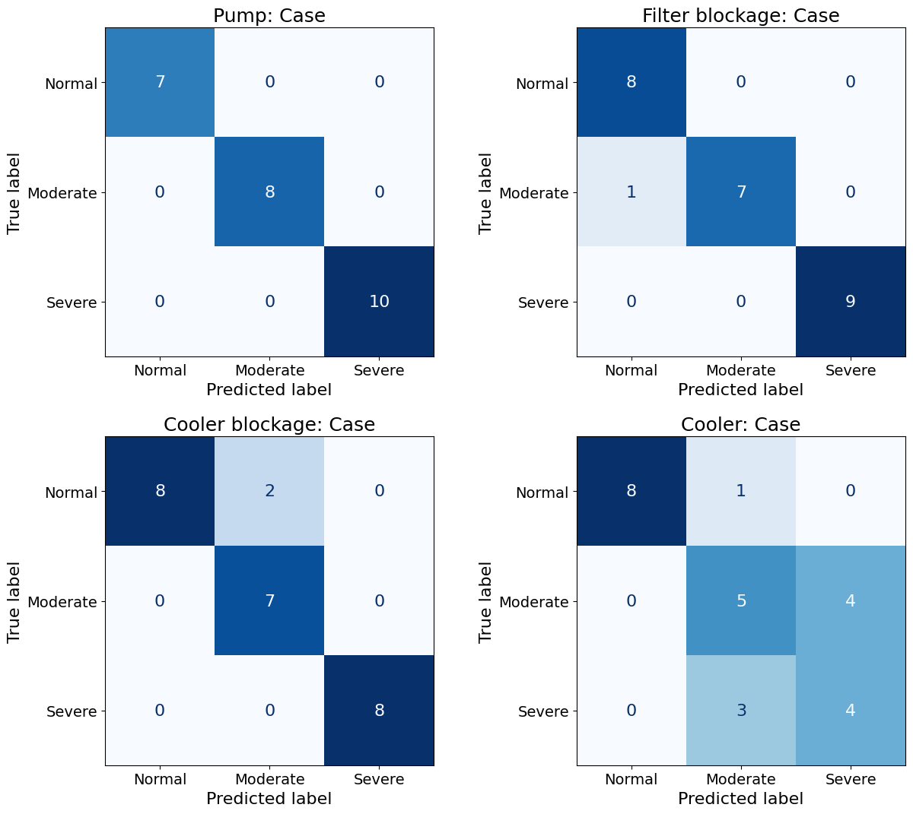
Table A.8 Severity diagnosis accuracy for 25 test conditions
| Features | Pump | Filter blockage | Cooler blockage | Cooling fault | Mean |
|---|---|---|---|---|---|
| 24 | 100% | 84% | 88% | 80% | 88% |
| 32 | 100% | 96% | 72% | 68% | 84% |
| 44 | 100% | 96% | 92% | 68% | 89% |
Table A.8 compares severity diagnosis across feature configurations. With 44 features, accuracies are 100% for the pump, 96% for filter blockage, 92% for cooler blockage, and 68% for the cooler cooling fault, averaging 89%. The corresponding numbers of correct decisions are 25/25, 24/25, 23/25, and 17/25. Thus, the mean accuracy of 89% is equivalent to 89 correct severity decisions out of 100 component decisions.
Unlike binary diagnosis, severity diagnosis does not improve consistently as features are added. Mean accuracy is 88%, 84%, and 89% for 24, 32, and 44 features, respectively. Relative to the 24-feature baseline, 44 features improve filter- and cooler-blockage diagnosis, but cooler cooling-fault accuracy falls from 80% to 68%. Even physically meaningful features can have different effects across fault modes because of redundant information, limited training data, and model capacity.
In particular, the 44-feature binary model distinguishes normal operation from a cooler cooling fault well, but severity diagnosis shows substantial confusion between moderate and severe faults. Thermal response delays, changes in flow and inlet temperature, and combinations with other faults may contribute. The result is best interpreted as a limitation of severity discrimination with the present data, features, and model, rather than evidence that cooling-fault severity is fundamentally unidentifiable.
A.1.5 Overall Conclusions
The results illustrate the different data requirements of anomaly detection and supervised diagnosis. A reference built from one normal record detects deviations under component faults, but the absence of additional normal tests prevents validation of the false-alarm rate. Supervised severity diagnosis is more difficult than binary diagnosis, particularly when distinguishing moderate from severe cooler cooling faults.
Improvement should begin by examining how clearly temperature responses actually differ between the two severity levels. Adding temperature rise rates or temperature changes over selected intervals to the current window means and standard deviations could incorporate transient differences as well as temperature levels. A separate model based on temperature and flow features directly related to cooling faults could also be compared with the current joint model for all four fault modes. If the measured responses themselves differ little, feature or model changes alone may be insufficient. Temperature responses should then be observed for a sufficiently long duration, and repeated tests should establish whether severity-dependent differences are reproducible.
After evaluating these improvements, validation should be extended to changes in load and ambient conditions and to new fault conditions to establish diagnostic performance and the applicable operating range.